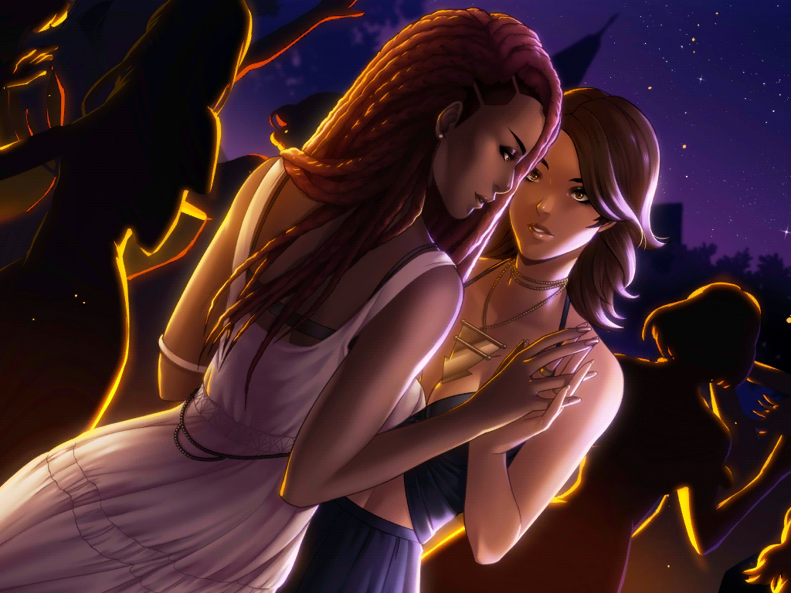

Mystery Spell - Sarah. A spellbinding encounter.
When you first arrive in Mystery Spell, you meet Sarah, whose radiant beauty leaves you breathless.
How far will the spellbinding chemistry between you both go?
Here are the choices within Sarah's route. These are the options I chose,
although I’m not completely sure they’re correct.
Chapter 1
- It's fabulous! / It's surprising.
- I laugh. / I stick my tongue out at him.
- I talk openly about my shelter idea. / I broach the subject gently.
- I criticize her. / I try to understand her.
- It stresses me out. / I'd rather just forget all about it.
- I think back to my vision. / I try to forget my vision.
- I want to learn more about witches. / I'm more interested in other supernatural beings.
- I keep digging at him. / I go back to being serious.
- I have to help this young girl. / Elijah is right.
- I'm going to save this girl. / We'd better go straight over to Cassandre's.
- I run to intervene. / I yell at him.
- I wait for him to run away. / I turn to the girl.
- I make a joke. / I make the introductions.
- I start to run. / I take Elijah by the arm.
- I take his hand. / I tease him.
- I panic. / I smile.
- I hesitate. What if I make a wrong move? / I'm going for it! (Don't hesitate or you won't get the special scene!)
- Special Scene

- I start a conversation to dispel my nerves. / I keep a quiet and savor the moment.
- I let Sarah lead. / I lead the dance.
- I'm disappointed. / I'm under her spell.
- I think I'm right. / I'd rather not get carried away.
- I give it to her straight. / I change the subject.
- I try to hide my headache. / I don't care if I get caught.
- I step in to save Sarah. / I ask Elijah to protect us. (I haven't tried the other option yet)
- I admit I'm in shock. / I act blasé.
- I cut him off before he can finish his sentence. / I grimace as I wait for what's coming.
- I keep a low profile. / I remain confident.
- I politely voice my disagreement. / I yell. (Yelling will make you look bad to Sarah)
Chapter 2
- I think back to the way Cassandre looked at me when we left. / I start cursing as a way to vent my anger.
- I suggest Elijah to trick his grandmother. / I take a step back from the situation.
- He's exaggerating! / I can't help but defend Sarah.
- I think about Sarah. / I think about Cassandre.
- I look for a weapon to protect myself. / I go open the door. (It doesn't matter, it's Sarah)
- I'm being sarcastic. / I lighten the mood.
- I'm speechless. / I frown.
- I relax a little. / I stay on my guard.
- I go easy on her. / I question her.
- I blush. / I respond.
- I accept without hesitation. / I can't promise anything.
- I make up a lie. / I make him believe he was dreaming. (It doesn't matter, he knows)
- I want to understand how the letter got here. / I want to know more about how the coven communicates.
- I rush to look at my screen. / I let Elijah look at his phone first.
- I continue to grumble. / I snap at Elijah.
- It's beautiful. / It smells like witchcraft in here!
- I introduce myself. / I talk about Nao.
- I gasp in fear. / I hide my angst.
- I exchange a worried glance with Elijah. / I ask Haku what he can tell me. (This option will explain better your story with Elijah)
- I let him know I'm mad at him. / I try to soothe him.
- I'm still anxious about my gift. / I'm so glad we've found out about this bookstore!
- I ask her for some more. / I'll start with these two.
- I try to calm him down. / I try to understand what he means.
- I need to know why. / I drop the subject.
- I wave at her. / I smile at her shyly.
- I tell her the truth. / I mention my passion for all things supernatural.
- I try to wow Sarah with an anecdote. / I ask Sarah what other stories she has.
- I add some nuance. / I contradict her. (Sarah doesn't like you to be very rude about things, don't contradict her)
- I'm scared. / I pull myself together.
- I agree to have lunch with Sarah. / I decline her invitation. (This changes the story, if you agree to have lunch with Sarah, you get a romantic moment together but Elijah will be angry with you)
- I move away quickly. / I hold Sarah's fingers a little longer.
- My latest vision worries me. / Maybe I should talk to Elijah about it.
- I tense up. / I pretend it didn't happen. (Acknowledge your feelings to get the special scenes!)
- Special scene
- I admit the truth. / I stammer.
- I slip my tongue in. / I nibble at her lip.
- I let my instict take over. / I savor every moment.
- I ask her what is going on. / I try to find an explanation.
Chapter 3
- I walk away from Sarah. / I talk to her calmly. (It doesn't matter, you still get your feelings hurt...)
- I won't be fooled again. / I should give Sarah a chance to explain herself.
- I hesitate. / I lie to her.
- I'm scared of confessing. / I have nothing to lose by sharing with these people.
- My gift is magical! / Maybe there's still time to master my power?
- I give her a curt reply. / I'm shocked.
- I want to know more. / I don't want to know any more.
- I don't intervene. / I give him my support.
- I follow him. / I point out Cassandre´s bad attitude.
- I resent them both. / I try to put things in perspective.
- ...
Chapter 4
- ...
Final chapter
- ...